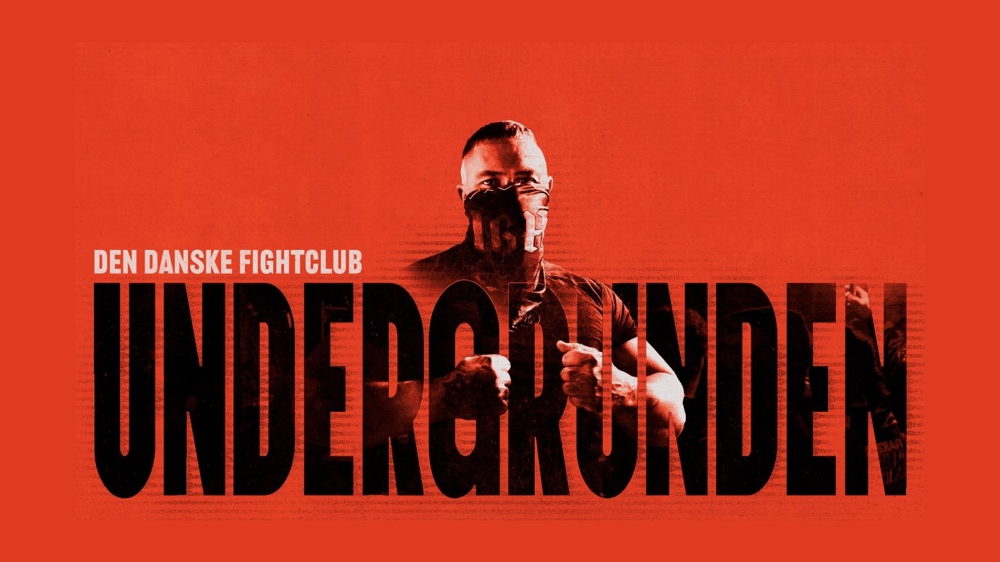
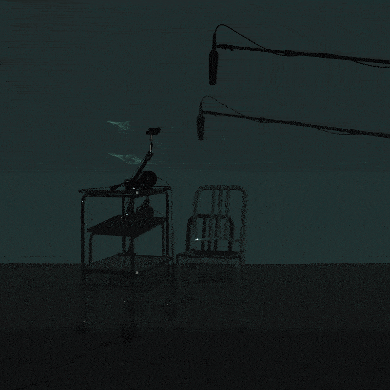
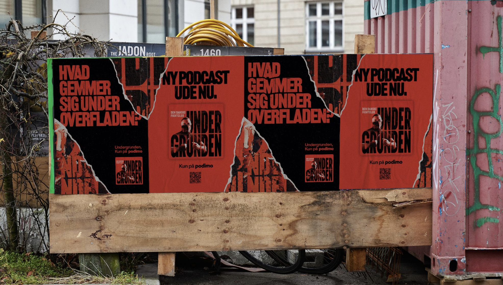
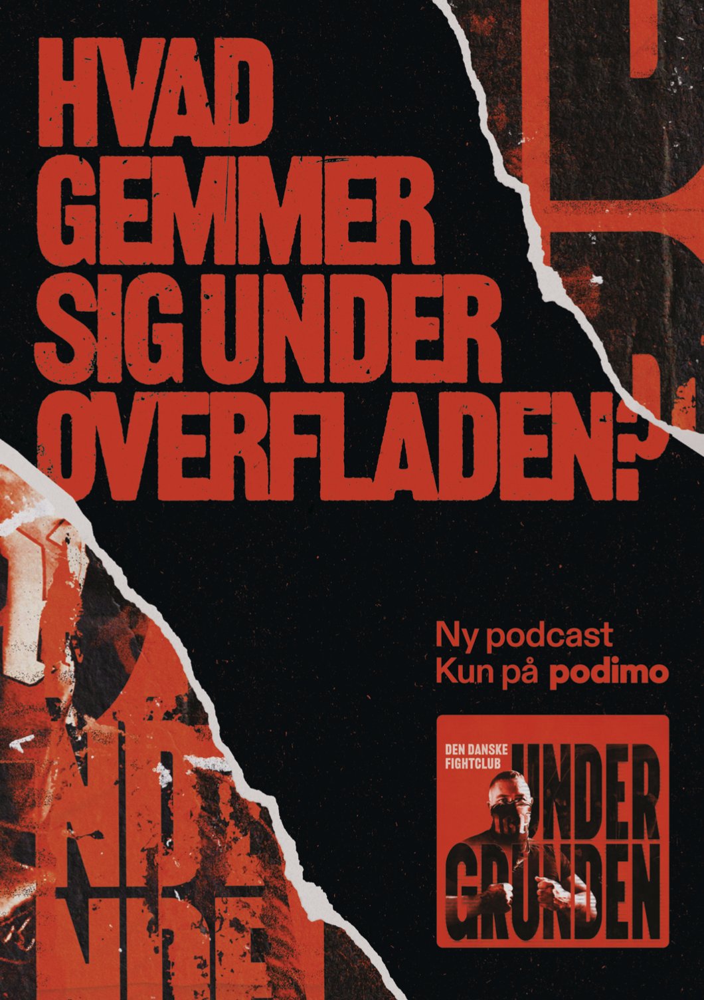
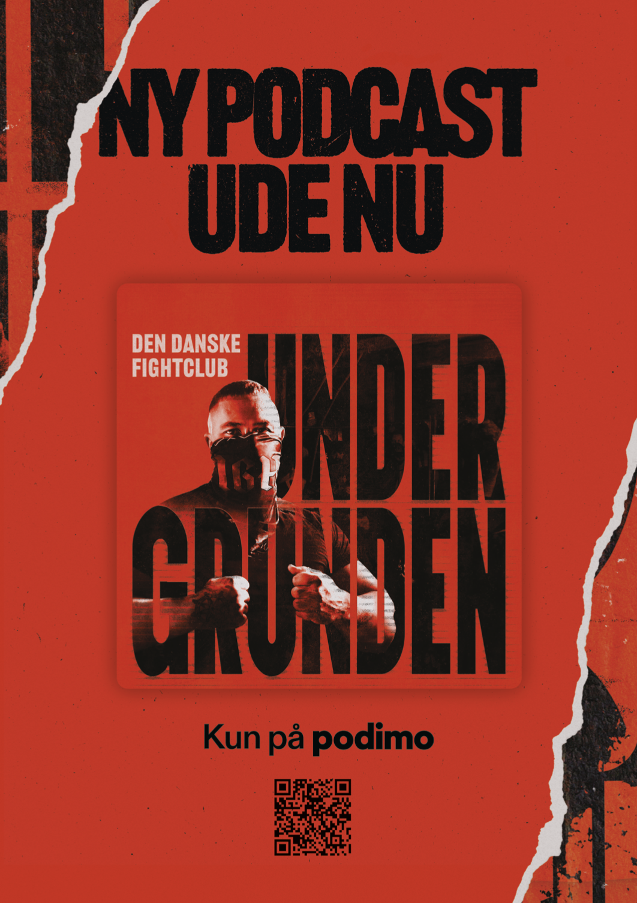

Starting with this one.
Two journalists spent three years inside Denmark's hidden bare-knuckle fight scene. Launching their documentary meant marketing a world that couldn't be shown, so the campaign made sound itself the proof, and the launch model built here became the blueprint for tentpoles.
Undergrunden: Den danske fightclub is three years of investigative journalism inside a world that stays hidden by design: secret locations, encrypted invitations, sources protected by voice modification. Backed by the Danish Film Institute and the Public Service Puljen, it's the kind of journalism that earns a launch, and the kind that forbids the usual one.
The marketing problem was the creative opportunity: a visual world off-limits, for an audio platform. So the campaign committed fully to the medium. If the show's power lives in what you hear, prove it.
The teaser film, the Eksperimentet segment we cut into ads, put a handful of well-known Danes in front of the series' authentic audio while biometric tracking and facial analysis measured what happened to them. Micro-reactions the eye normally misses: small jerks, freezes, flashes of fear and fascination at once, triggered by sound alone.
It reads as a stunt and works as a demonstration: audio moving people measurably, using the show itself as the instrument. For a platform whose entire product is what sound can do, the teaser was the brand argument in miniature.


Around the teaser, the 360: Podimo's first R-rated audio trailer, turning the content's intensity into the hook rather than a liability. A launch film and social rollout. Weekly Monday episodes holding the habit. A follow-up portrait series returning to the scene's most striking characters. The journalists carrying the story onto other networks' shows. And a conversion offer closing the loop from curiosity to subscription.



The launch earned its way into culture: Denmark's national broadcaster DR covered the show in its culture pages under the headline "first they smash each other, then they share a pizza," the marketing trade press covered the Experiment format as a campaign story in its own right, international outlets picked it up in English, and the series landed an IMDb listing. One launch, four kinds of earned attention.
Undergrunden was the full-court test: teaser, trailer, launch, earned media, sustain, and offer, orchestrated as one moment around a single show. It worked, and it didn't stay a one-off. The model was productized into the campaign portfolio as the tentpole, the system's biggest play, proven here before it built a vertical super-brand.
It wasn't one lucky asset. The Experiment format held the top three creative slots in the campaign, all above 12% CTR, against a campaign average of 7.71%.